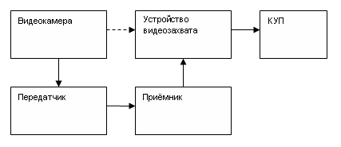
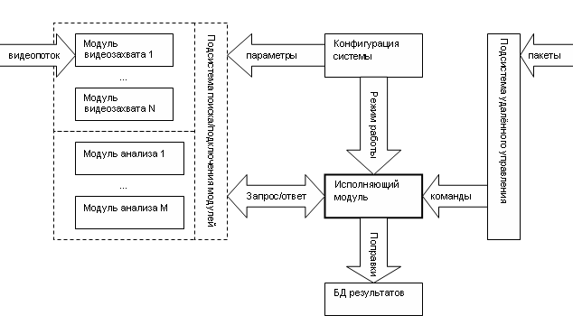
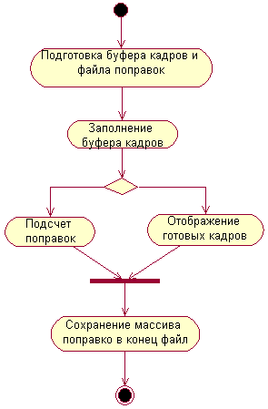
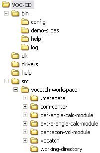

Руководство пользователя КУП 1.0b
Содержание
- Назначение;
- Возможности;
- Минимальные требования к ПО;
- Комплектность;
- Установка ПО;
- Описание интерфейса ПО;
- Описание алгоритма решаемой задачи;
- Проверка работоспособности ПО;
- Особенности ПО.
1. Назначение
Система предназначена для анализа видеопотока с
целью вычисления параметров объекта в кадре (поправки). Далее приводятся
рисунки поясняющие архитектуру и процессы системы.

Рис.1 Общая архитектура

Рис.2 Архитектура КУП

Рис.3 Цикл работы КУП
В непрерывном режиме работы все этапы цикла повторяется до
прихода команды остановки. Именно поэтому для непрерывных режимов
желательно использовать буфер величиной в 1 кадр.
2. Возможности
- Система динамического подключения модулей (модули видеозахвата
и модули анализа кадров);
- Демонстрационный модуль видеозахвата для проверки системы;
- Сохранение параметров системы между сессиями работы;
- Гибкая настройка режимов работы;
- Система аудита (лог);
- Удалённое управление по локальной сети.
3. Минимальные требования к ПО
- Intel Pentium 3 CPU 2 ГГц;
- 1 Гб ОЗУ;
- 2 Гб свободного места (для платформы J2SE и файла подкачки);
- Сетевая плата (100/1000);
- Любая Java-совместимая ОС с поддержкой TCP/IP.
4. Комплектность
Дистрибутив системы размещается на одном оптическом носителе
(метка - "VOC-CD"). Структура каталогов верхнего уровня:
- bin - каталог с исполняемыми файлами системы;
- dk - каталог с инструментами разработчика, необходимыми для
сопровождение системы;
- drivers - каталог с драйверами для различных плат
видеозахвата;
- help - каталог с руководством пользователя системы;
- src - каталог с исходными файлами системы;
- start.bat - пакетный файл для запуска системы (запуск
непосредственно с CD нежелателен).

Рис.4 Детальная структура каталогов
5. Установка ПО
Шаги:
- Создать каталог с произвольным именем;
- Скопировать содержимое "VOC-CD" в созданный каталог
(далле все пути указываются относительно созданного каталога);
- Запустить установку платформы J2SE. Путь к установочному файлу
платформы - ".\dk\jdk-6-windows-i586.exe";
- Следовать инструкциям по установке платформы;
- Добавить в переменную окружения "PATH" путь к
каталогу "bin" установленной платформы;
- Установить драйвер платы видеозахвата. Путь к установочному
файлу - ".\drivers\Setup.exe";
- Установить драйвер HASP ключа. Путь к установочному файлу -
".\drivers\Hinstall.exe";
- Запустить систему. Путь к пакетному файлу запуска системы -
".\start.bat".